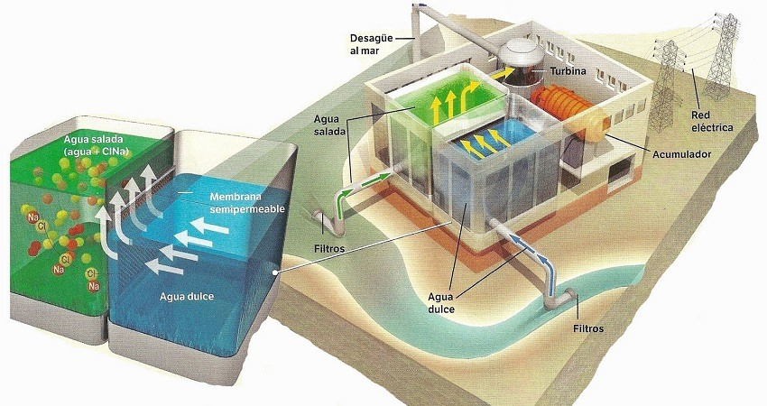

La energía osmótica o energía azul se basa, como su nombre indica, en la osmosis. Y para obtenerla, solo se necesita agua, sal y
una membrana permeable. ¿Pero qué es la ósmosis? Pues es un fenómeno natural entre dos líquidos con diferente concentración salina,
que intercambian moléculas a través de una membrana.
El proceso funciona de la siguiente manera: colocamos en dos tanques una masa de agua dulce y otra de agua salada,
separados por una membrana porosa. La osmosis hará que el agua dulce pase a través de la membrana al lado del agua salada,
aumentando el volumen y la presión. Esto mueve una turbina que, a continuación, genera electricidad. El potencial de este tipo de energía
limpia es muy grande en la desembocadura de grandes ríos, donde el agua dulce se mezcla con el agua salada del mar de forma natural.
Ya existen ejemplos de este tipo de centrales Noruega, donde en 2009 la empresa Statkraft inauguró la primera planta de energía osmótica
del planeta. En Francia, la compañía Sweetch Energy planea inaugurar la primera planta osmótica del país y producir 4 TWh de energía, el
equivalente a la cuarta parte de la electricidad consumida por Sevilla y Zaragoza en un año.
